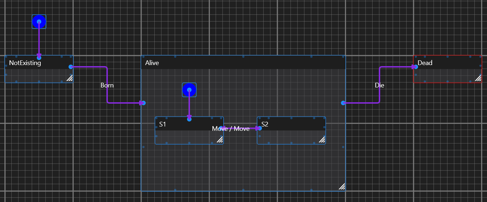
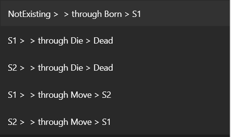
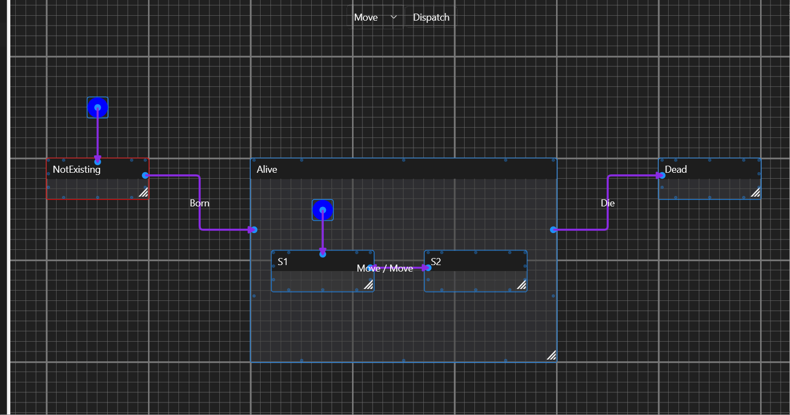

See Connections and Transitions
Connections VS Transitions
Connections don't necessary directly reflect Transitions.
Take a look at this Graph:

Those are generated transitions from those connections (you can always check those in the Transitions tab by pressing Refresh button): 
Note this:
- NotExisting connects to Alive but generated transition is NotExisting > S1. Note the InitialState node in Alive state.
- There's only one connection between Alive and Dead, but generated transitions are: S1 > Dead and S2 > Dead.
- There's only one connection between S1 and S2, but generated transitions are: S1 > S2 and S2 > S1. This is because this connection is set to be two-ways with two triggering events of the same name ("Move").
Testing the above graph for demonstration: 